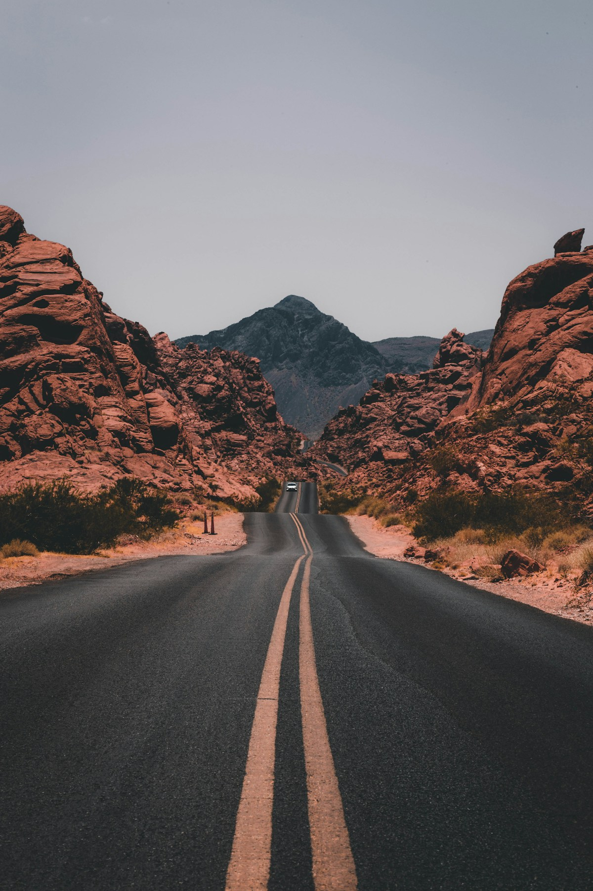

A República · Livro VII
O caminho para fora da caverna
Uma narrativa em etapas sobre como saímos da opinião e nos aproximamos do conhecimento.

Prisioneiros, sombras e uma saída
No Livro VII de A República, Platão apresenta a imagem de pessoas acorrentadas desde a infância no interior de uma caverna. Sem poder olhar para trás, elas veem sombras projetadas numa parede e ouvem ecos. Como nunca conheceram outra coisa, tomam essas imagens pela realidade.
Um prisioneiro é libertado. Primeiro, a luz o ofusca; depois, ele reconhece os objetos que produziam as sombras e, por fim, consegue olhar para o mundo exterior. Ao retornar para contar o que descobriu, porém, encontra a desconfiança dos antigos companheiros.
O que cada elemento sugere
Uma leitura resumida dos principais símbolos da alegoria.
| Elemento | Na narrativa | Possível sentido filosófico |
|---|---|---|
| Caverna | O espaço em que os prisioneiros vivem | O mundo percebido sem questionamento |
| Correntes | Impedem os prisioneiros de se virar | Limites, hábitos e crenças não examinadas |
| Sombras | Imagens projetadas na parede | Aparências confundidas com conhecimento |
| Subida para fora | A saída difícil da caverna | O processo de aprender e rever certezas |
| Sol | A luz mais intensa do exterior | Na leitura platônica, o Bem como princípio de compreensão |
A alegoria admite interpretações; esta tabela reúne associações comuns para iniciar a leitura.
Aprender pode mudar a maneira de ver.
A saída não é instantânea nem confortável. O prisioneiro precisa se acostumar à luz, reconhecer que estava enganado e aceitar que sua antiga explicação do mundo era incompleta.
Por isso, a alegoria continua provocando perguntas: de onde vêm as nossas certezas? Como distinguimos uma imagem de algo verdadeiro? E como reagimos quando alguém desafia aquilo em que acreditamos?
Uma interpretação em construção
Este espaço será preenchido com o vídeo produzido pela equipe.
Vídeo em produção